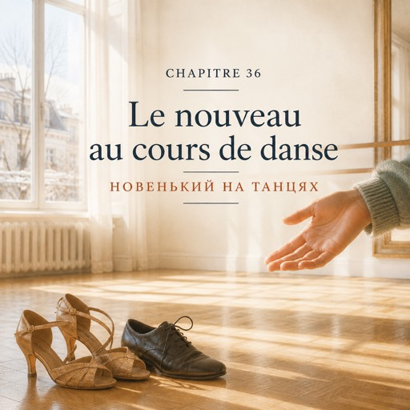

Озвучення цієї глави ще немає.
Le mercredi 14 janvier — середа, 14 січня
En janvier, la boutique respire. Les gens n'achètent plus rien pendant trois semaines, et c'est normal, et Solange ferme à sept heures pile.
У січні магазин видихає. Три тижні люди нічого не купують, і це нормально, і Соланж зачиняє рівно о сьомій.
Le mercredi soir, il y a un cours rue de Paris, à Montreuil, à huit heures.
У середу ввечері на вулиці Парі в Монтреї о восьмій є заняття.
Depuis le six octobre : onze fois le lundi, zéro fois le mercredi.
Від шостого жовтня: одинадцять разів у понеділок, жодного разу в середу.
Ce soir, elle y va.
Сьогодні ввечері вона йде.
Bruno est là à huit heures moins deux, chemise noire, voix qui porte jusqu'au fond de la salle.
Бруно на місці за дві хвилини до восьмої: чорна сорочка, голос, який дістає до кінця залу.
— Ce soir, on change de partenaire toutes les deux chansons. Personne ne reste dans son coin. C'est un cours, pas un mariage.
— Сьогодні міняємо партнера кожні дві пісні. Ніхто не стоїть у своєму кутку. Це заняття, а не весілля.
Le mercredi, on danse à deux. C'est écrit sur la porte depuis octobre.
У середу танцюють у парі. Це написано на дверях ще з жовтня.
Le lundi, on apprend des pas. Le mercredi, on apprend à tenir quelqu'un.
У понеділок учаться крокам. У середу вчаться тримати когось.
La main gauche sur l'épaule d'un inconnu, la main droite dans la sienne, et entre les deux une distance que personne n'a jamais mesurée et que tout le monde connaît.
Ліва рука на плечі незнайомця, права — в його руці, а між ними відстань, якої ніхто ніколи не міряв і яку всі знають.
Voilà. C'est tout ce que c'était.
Ось і все. Оце й усе, чим воно було.
Son premier partenaire a soixante ans et danse mieux qu'elle. Le deuxième aussi.
Її першому партнерові шістдесят, і танцює він краще за неї. Другому теж.
Elle regarde ses pieds. Bruno crie qu'on ne regarde pas ses pieds. Elle continue à regarder ses pieds.
Вона дивиться собі під ноги. Бруно кричить, що під ноги не дивляться. Вона далі дивиться собі під ноги.
Le troisième arrive en retard, essoufflé, avec un sac en bandoulière qu'il ne sait pas où poser.
Третій приходить із запізненням, захеканий, із сумкою через плече, яку не знає, куди подіти.
— C'est ma première fois.
— Я тут уперше.
— Moi aussi. Enfin, le mercredi.
— Я теж. Тобто в середу.
Il lui marche sur le pied à la quatrième mesure.
На четвертому такті він наступає їй на ногу.
Il recommence huit mesures plus loin.
Через вісім тактів він робить це знову.
— Excusez-moi. Enfin, pardon. Je ne sais jamais lequel des deux.
— Вибачте. Тобто пробачте. Я ніколи не знаю, котре з двох.
— Moi non plus.
— Я теж не знаю.
Le cours de danse, c'était l'endroit où elle n'avait pas besoin de parler.
Танці були тим місцем, де їй не треба було говорити.
Ce soir, elle parle.
Сьогодні вона говорить.
Entre deux chansons, il dit qu'il s'appelle Théo, qu'il vend des livres d'occasion près de la Bastille, et que sa sœur lui a offert dix cours parce qu'il ne sort jamais.
Між двома піснями він каже, що його звати Тео, що він продає букіністичні книжки біля Бастилії і що сестра подарувала йому десять занять, бо він ніколи нікуди не виходить.
— Je vends des fleurs. Rue de Bretagne.
— Я продаю квіти. На вулиці Бретань.
— Vous vendez des fleurs, je vends des livres. On vend tous les deux des choses qui ne servent à rien.
— Ви продаєте квіти, я продаю книжки. Ми обоє продаємо речі, які ні для чого не потрібні.
— Et tout le monde en achète.
— І всі їх купують.
Il rit. Il rit une demi-seconde trop tard, comme quelqu'un qui a d'abord traduit dans sa tête — sauf que lui, il est français, et qu'il a juste réfléchi.
Він сміється. Сміється на півсекунди пізніше, ніж треба, — як людина, що спершу переклала подумки. Тільки він француз, і він просто подумав.
À la fin du cours, il pose sa question en trois morceaux, comme on avance sur de la glace.
Наприкінці заняття він ставить своє питання трьома шматками, як ідуть по льоду.
— Je peux vous demander... votre accent, il vient d'où ?
— Можна вас запитати... ваш акцент, він звідки?
— Ce n'est pas joli. C'est un accent.
— Це не гарно. Це акцент.
— D'accord. Alors il est bien.
— Добре. Тоді він хороший.
Elle ne trouve rien à répondre à ça, et cette fois la langue n'y est pour rien.
Вона не знаходить, що на це відповісти, і мова тут ні до чого.
Bruno éteint la moitié des lumières. Personne n'a besoin de traduction.
Бруно вимикає половину світла. Перекладу нікому не потрібно.
— La semaine prochaine, mercredi. Vous permettez ?
— Наступного тижня, у середу. Ви дозволите?
Sur le chemin du retour, elle s'arrête sous un lampadaire et sort le carnet. Elle écrit deux mots l'un sous l'autre :
Дорогою додому вона зупиняється під ліхтарем і дістає блокнот. Пише два слова одне під одним:
Elle referme le carnet.
Вона закриває блокнот.
Puis elle le rouvre et elle écrit un prénom.
Потім відкриває його знову й записує ім'я.